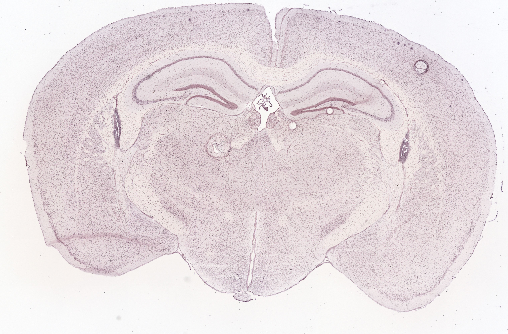
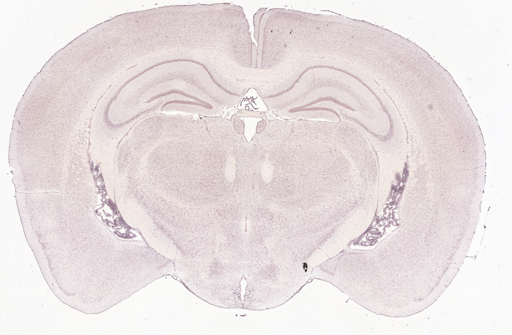
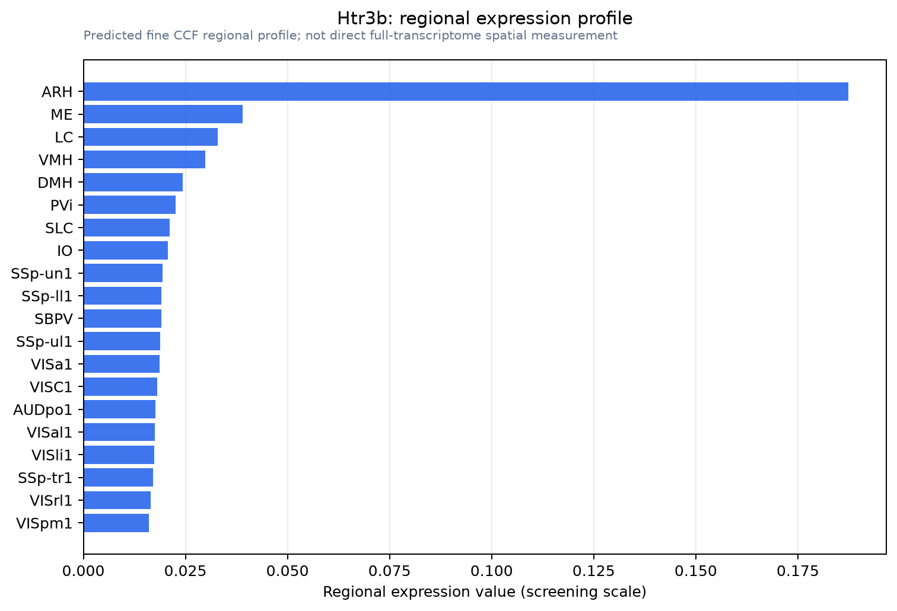

Htr3b
5-hydroxytryptamine receptor 3B (5-HT3-B) (5-HT3B) (Serotonin receptor 3B)
Spatial tier: STRICT_EXCLUSIVE · Class: ION_CHANNEL · Top region: ARH (Arcuate hypothalamic nucleus) · Positive regions: 1/554
48.6Discovery Score
38.5Targetability Score
CEvidence grade C
What this means: Htr3b: predicted fine-region profile is strict-exclusive, with 1 positive regions out of 554 (limit 12); direct spatial validation is required.
Direct spatial evidence
MERFISH REGION LOCATOR

DIRECT ALLEN ISH

DIRECT ALLEN ISH

Regional expression figure

Predicted WMB × fine-CCF profile; not direct full-transcriptome spatial measurement.
Spatial profile
Evidence and specificity
- Evidence status
- PREDICTED_FINE
- Direct sources
- None; predicted localization only
- Exclusive threshold
- 12 positive regions out of 554
- Spatial specificity
- 0.359
- Top-region fraction
- 0.205
- Filter status
- PASS
Interpretation limits
- Cell-type-to-region projection is imputed expression, not direct spatial measurement.
- Adult reference atlases do not establish stability across age, sex, strain, state, or disease.
- Transcript abundance does not guarantee protein abundance or genetic-tool performance.